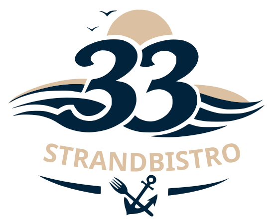
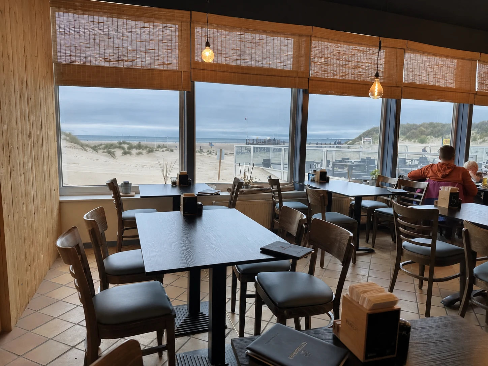
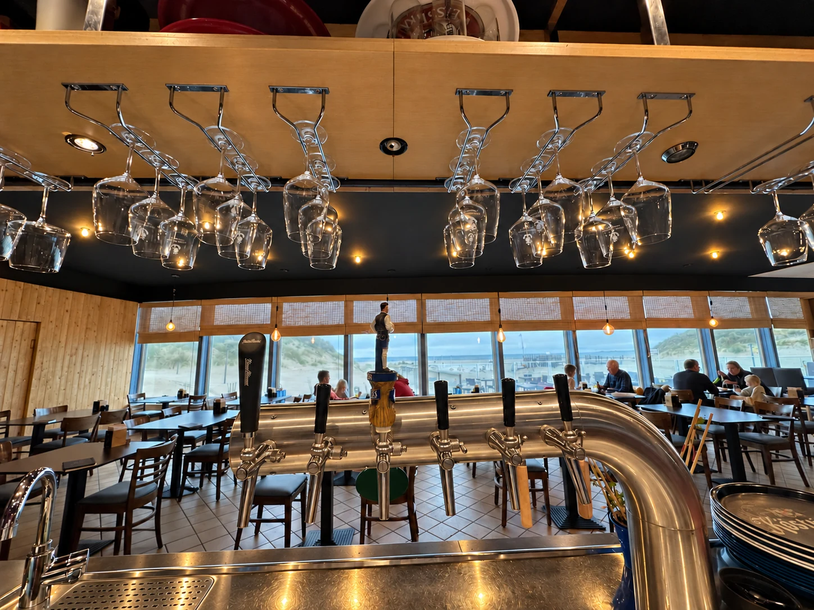

Kiosk
Matjes, Backfisch, Räucherlachs oder Krabben im Brötchen – ein Stück Nordsee für den Weg zum Strand.

Strandbistro 33Öffnungszeiten

Norddorf auf Amrum · Strunwai 33
Fischbrötchen auf die Hand, Bistroküche am Tisch, Kaffee mit Dünenblick. Direkt am Strand von Norddorf.
Matjes, Backfisch, Räucherlachs oder Krabben im Brötchen – ein Stück Nordsee für den Weg zum Strand.
Fisch’n’Chips, Flammkuchen, Pasta, Salate und Currywurst. Bodenständig, frisch und satt machend.
Cappuccino, Pharisäer und hausgemachter Kuchen. Am Fenster oder draußen im Wind.
Dazu haben wir leider nichts auf der Karte. Frag gern vor Ort nach.
Ein Stück Nordsee auf die Hand.

Mit frischen Cherrytomaten und Rucola.
Alle Penne mit Parmesan.
29 cm. Mit hausgemachter Tomatensoße und Mozzarella-Gouda-Mix. Bitte nach der aktuellen Verfügbarkeit fragen.
Zu Salat, Pasta oder Flammkuchen: Hähnchen +6,00 € · Garnelen +7,00 €.
Der Ort
Drinnen warmes Licht und Tische direkt an der Scheibe, draußen die Holzterrasse zwischen Dünen und Strand. Und an der Theke wartet schon ein frisch gezapftes Bier.
Wischen für mehr Bilder →



Eigene Aufnahmen · Strandbistro 33
Gäste sagen
„Total lecker und gut belegt.“
„leckeres, bodenständiges, normales Essen&Trinken.“
„Die Familie hat sich wohlgefühlt“
Auszüge aus ausgewählten Rezensionen seit dem 1. Mai 2026. Zeitangaben wie bei Google Maps beim Abruf am 21.10.2026. Alle Rezensionen auf Google Maps
Anfahrt & Zeiten
Post ans Bistro: martenmeinerts@gmx.de
| Montag | 12:00–20:00 |
|---|---|
| Dienstag | 12:00–20:00 |
| Mittwoch | 12:00–20:00 |
| Donnerstag | Ruhetag |
| Freitag | 12:00–20:00 |
| Samstag | 12:00–20:00 |
| Sonntag | 12:00–20:00 |
Laut Google Maps · Stand 20.10.2026. Saisonale Änderungen möglich – aktuelle Zeiten prüfen.